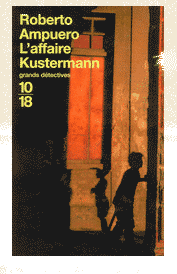
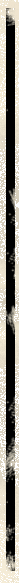
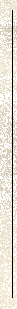
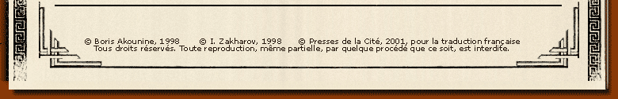

Cuba et l'Amérique latine, un décor tropical pour des polars très politiques Du port mythique de Valparaiso aux faubourgs rythmés de La Havane, en passant par les plages insomniaques de Miami Beach, Cayetano Brulé emmène le lecteur dans les coulisses d'un univers qu'il ne connaissait que sous un angle documentaire? L'Amérique latine est un continent fascinant, mais à la vie politique mouvementée. Derrière les beautés des tropiques ou la musique des boléros, il ne faut pas se faire d'illusions. Ainsi à Cuba, sous la dictature castriste, le désenchantement est général, les apparences trompeuses et la vérité ne triomphe que brièvement? Cayetano Brulé, un nouveau Grand Détective 10/18 au sang chaud Le détective privé Cayetano Brulé a un passeport américain mais est né à La Havane en 1945. Ses parents ont émigré en Floride en 1956, trois ans avant l'arrivée de Castro au pouvoir. C'est à Miami qu'il a fait ses études et qu'il a travaillé avant de rencontrer une Chilienne marxiste qu'il préfère aujourd'hui oublier. Elle l'avait convaincu de s'installer à Valparaiso, au Chili, en 1975, avant de l'abandonner pour la France et un musicien d'un groupe folklorique. |

| Harry Kemelman est né le 24 novembre 1908
à Boston, dans le Massachussets. Parallèlement à une carrière d'enseignant, c'est en 1964 qu'il publie, On soupçonne le rabbin, mettant en scène, David Small, rabbin de la communauté de Barnard's Crossing dans le Massachusetts qui, contraint et forcé par les événements, met son bon sens et la sagesse des Ecritures Saintes au service de la justice. Cette première aventure est couronnée par le Prix Edgard Poe du meilleur premier roman. Suivront neuf autres aventures qui ont été traduites en plusieurs langues. Harry Kemelman est mort en 1996. |

| Querelle d'amoureux qui a mal tourné ? Règlement de compte entre contrebandiers ? Vengeance de trafiquants de drogue contre ceux qui trahissent le cartel ? L'enquête officielle n'a rien donné et, découragé, Carlos Kustermann, un riche homme d'affaires, demande à Cayetano Brulé d'enquêter sur la mort de son fils, Cristian, assassiné dans une pizzeria il y a quelques mois, à Vina del Mar, une station balnéaire chilienne. L'enquête du détective privé le mènera d'abord à Bonn, en Allemagne, où Cristian Kustermann travaillait comme journaliste, puis à La Havane, où il apprend que le fils de l'homme d'affaires appartenait à un réseau de guérilleros? |
| - On soupçonne le rabbin - Samedi, le rabbin se met à table - Dimanche, le rabbin est resté à la maison - Lundi, le rabbin s'est envolé pour Israël - Mercredi, le rabbin a plongé - Jeudi, le rabbin est sorti - Un jour le rabbin s'en ira - Un beau jour le rabbin a acheté une croix - Le jour où le rabbin a démissionné - Ce jour où le rabbin a quitté la ville |
